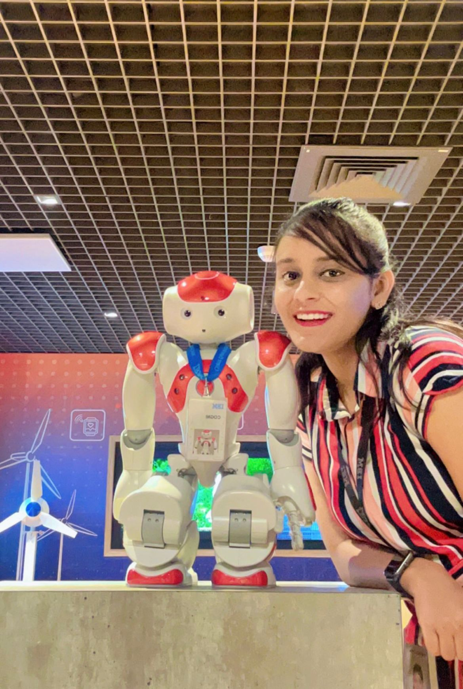
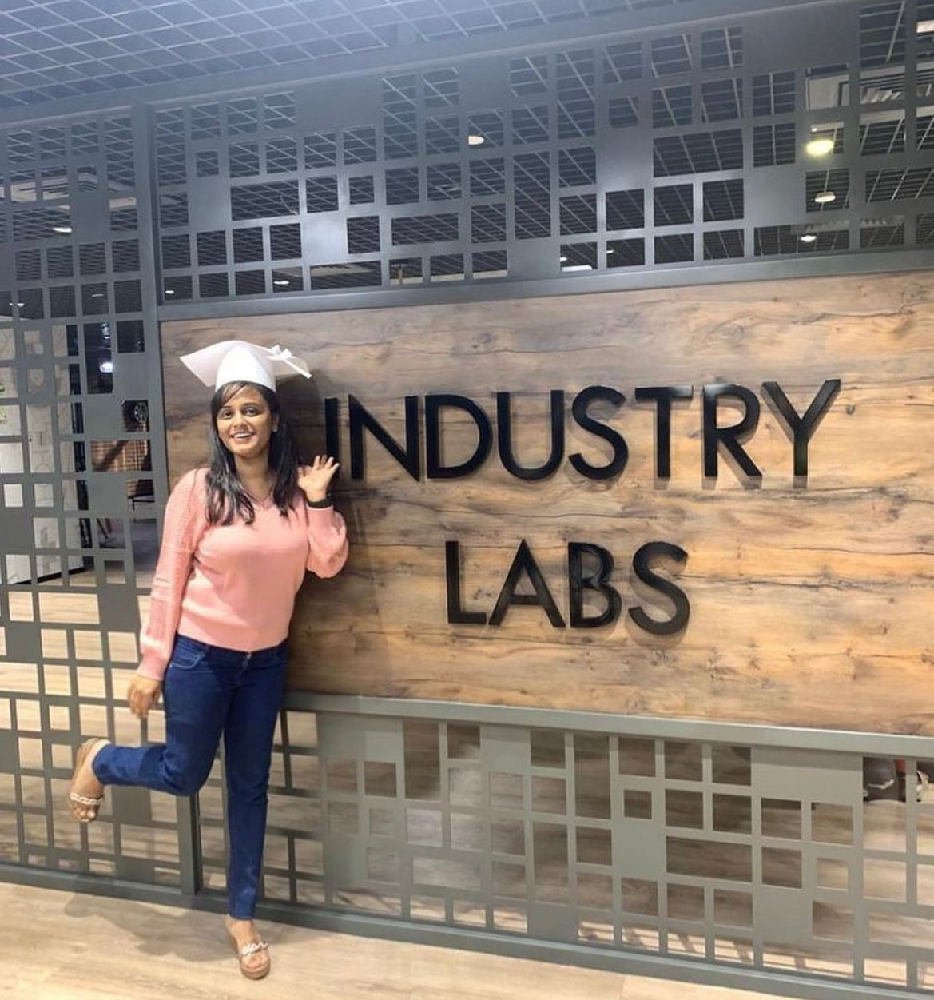
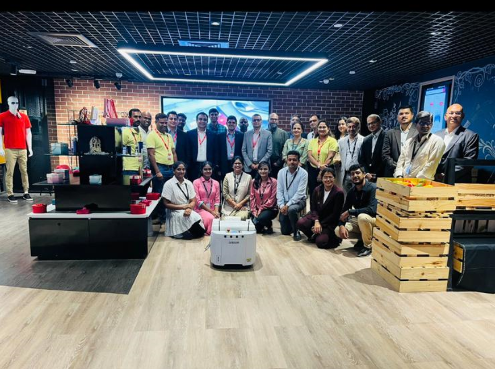

Employment History
Robotics 🦾🤖🦿 Edge Developer 👩💻 - IoT & Edge Computing
IBM India Pvt Ltd 👁️🐝Ⓜ️
Feb 2021 - Aug 2023, Bengaluru
- Translated crucial IT requirements into innovative design, development, and assembly of components, contributing to the successful implementation of information systems.
- Executed and delivered impactful functional designs, creating fully operational models that exceeded project expectations.
- Evaluated and optimized AI models for robotics applications, focusing on performance and efficiency.
- Delivered functional designs that surpassed project expectations, resulting in a remarkable 25% boost in user satisfaction and a 30% enhancement in system performance.
- Pioneered integration techniques for IoT devices, boosting operational efficiency.
- Refined sensor calibration processes, ensuring high precision in robotics systems.
- Led cross-functional teams to align IT and robotics design, enhancing project cohesion.


